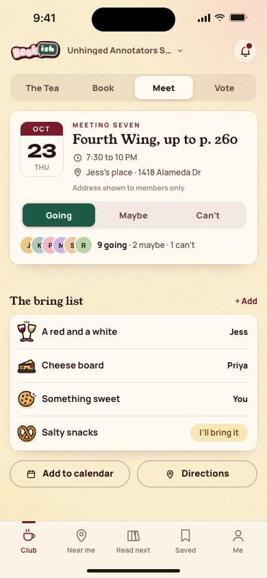
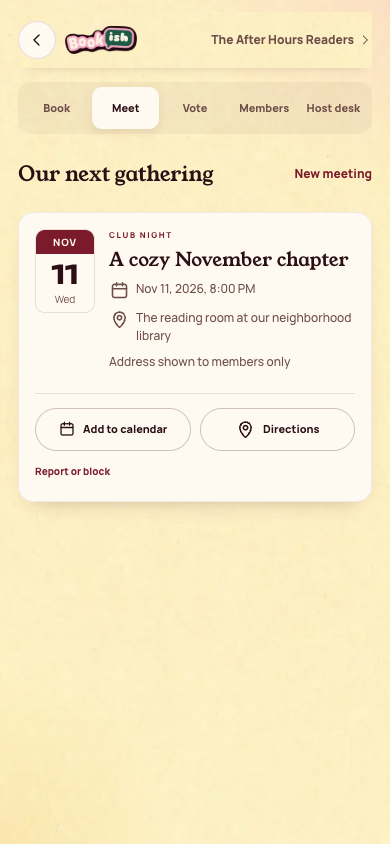

All screens24. meeting rsvp
Oct 18 batch reference; individual approval not recorded in decisions 111-143
Rebuilt and inspected, data adaptations documented (prior score 5/10)
Member-only meeting details
Existing app has meeting details, with calendar reminders in public detail. It has no in-app RSVP action.
Approved reference
Actual app, 390 by 844
Overflow: none. Missing local assets: 0. Browser errors: 0. Em dash or emoji: none.
Original source: external/approved-art/full-app-1016/html/24-meeting-rsvp.html